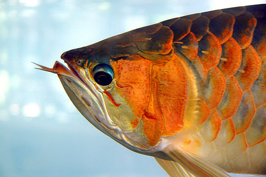
The Asian arowana (Scleropages formosus) comprises several phenotypic varieties of freshwater fish distributed geographically across Southeast Asia.[1] While most consider the different varieties to belong to a single species,[2][3][4][1][5] work by Pouyaud et al. (2003)[6] differentiates these varieties into multiple species.
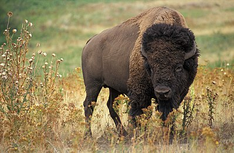
The American bison or simply bison (Bison bison), also commonly known as the American buffalo or simply buffalo, is an American species of bison that once roamed North America in vast herds. Its historical range, by 9000 BC, is described as the great bison belt, a tract of rich grassland that ran from Alaska to the Gulf of Mexico, east to the Atlantic Seaboard (nearly to the Atlantic tidewater in some areas) as far north as New York and south to Georgia and, according to some sources, further south to Florida, with sightings in North Carolina near Buffalo Ford on the Catawba River as late as 1750.
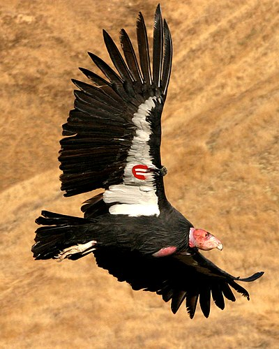
The California condor (Gymnogyps californianus) is a New World vulture and the largest North American land bird. It became extinct in the wild in 1987 when all remaining wild individuals were captured, but has since been reintroduced to northern Arizona and southern Utah (including the Grand Canyon area and Zion National Park), the coastal mountains of central and southern California, and northern Baja California in Mexico. Although four other fossil members are known, it is the only surviving member of the genus Gymnogyps. The species is listed by the IUCN as Critically Endangered.
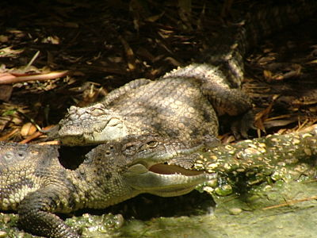
The Siamese crocodile (Crocodylus siamensis) is a medium-sized freshwater crocodile native to Indonesia (Borneo and possibly Java), Brunei, East Malaysia, Laos, Cambodia, Myanmar, Thailand and Vietnam. The species is critically endangered and already extirpated from many regions. Its other common names include Siamese freshwater crocodile, Singapore small-grain, and soft-belly
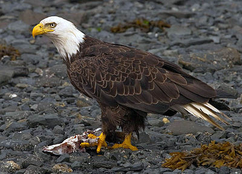
The bald eagle (Haliaeetus leucocephalus) is a bird of prey found in North America. A sea eagle, it has two known subspecies and forms a species pair with the white-tailed eagle (Haliaeetus albicilla). Its range includes most of Canada and Alaska, all of the contiguous United States, and northern Mexico. It is found near large bodies of open water with an abundant food supply and old-growth trees for nesting.
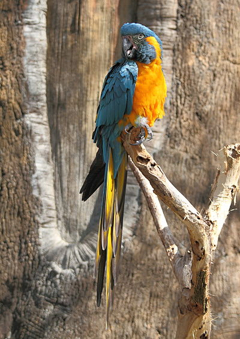
The blue-throated macaw (Ara glaucogularis; previously Ara caninde), also known as the Caninde macaw or Wagler's macaw,[2] is a macaw endemic to a small area of north-central Bolivia, known as Los Llanos de Moxos. In 2014 this species was designated by law [3] as a natural patrimony of Bolivia, where it is known as barba azul, which means 'blue beard' in Spanish.
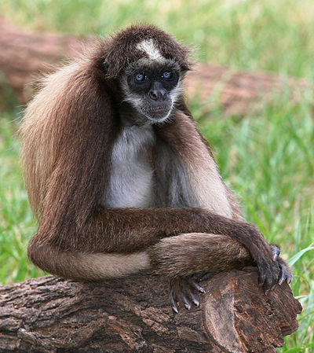
The brown spider monkey or variegated spider monkey (Ateles hybridus) is a critically endangered species of spider monkey, a type of New World monkey, from forests in northern Colombia and northwestern Venezuela.
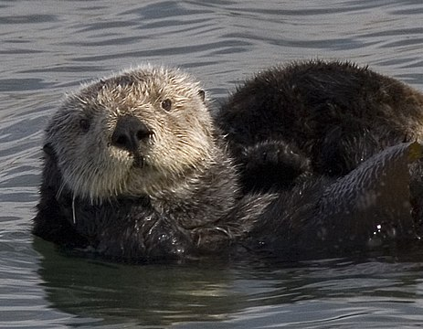
The sea otter (Enhydra lutris) is a marine mammal native to the coasts of the northern and eastern North Pacific Ocean. Adult sea otters typically weigh between 14 and 45 kg (31 and 99 lb), making them the heaviest members of the weasel family, but among the smallest marine mammals. Unlike most marine mammals, the sea otter's primary form of insulation is an exceptionally thick coat of fur, the densest in the animal kingdom. Although it can walk on land, the sea otter is capable of living exclusively in the ocean.
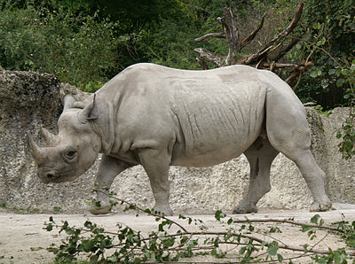
The black rhinoceros or hook-lipped rhinoceros (Diceros bicornis) is a species of rhinoceros, native to eastern and southern Africa including Angola, Botswana, Kenya, Malawi, Mozambique, Namibia, South Africa, Eswatini, Tanzania, Zambia, and Zimbabwe. Although the rhinoceros is referred to as black, its colours vary from brown to grey.
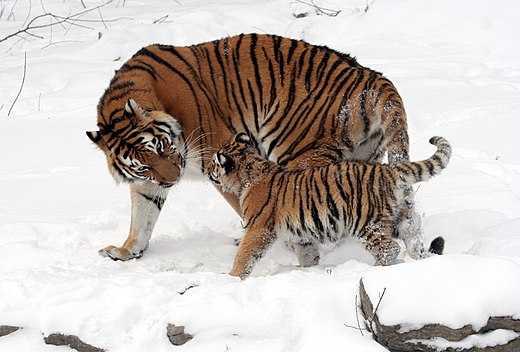
he Siberian tiger is a tiger from a specific population of the Panthera tigris tigris subspecies native to the Russian Far East, Northeast China,[3] and possibly North Korea.[4] It once ranged throughout the Korean Peninsula, north China, and eastern Mongolia. The population currently inhabits mainly the Sikhote-Alin mountain region in southwest Primorye Province in the Russian Far East.
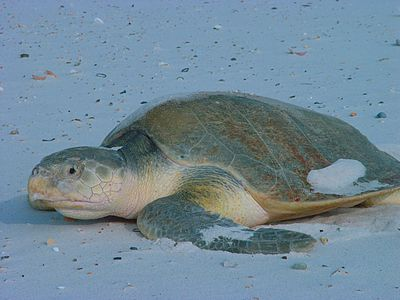
Kemp's ridley sea turtle[3] (Lepidochelys kempii), also called the Atlantic ridley sea turtle, is the rarest species of sea turtle and is the world's most endangered species of sea turtles. It is one of two living species in the genus Lepidochelys (the other one being L. olivacea, the olive ridley sea turtle).
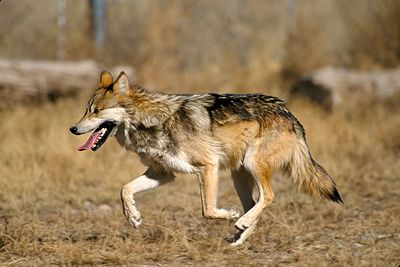
The Mexican wolf (Canis lupus baileyi), also known as the lobo,[a] is a subspecies of gray wolf native to southeastern Arizona and southern New Mexico in the United States, and northern Mexico; it also previously ranged into western Texas. It is the smallest of North America's gray wolves,[2] and is similar to the extinct Great Plains wolf (C. l. nubilus), though it is distinguished by its smaller, narrower skull and its darker pelt, which is yellowish-gray and heavily clouded with black over the back and tail